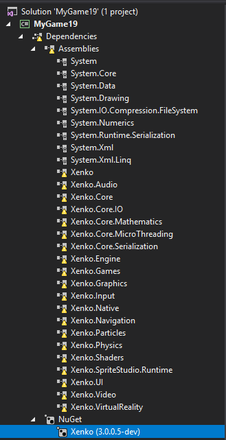
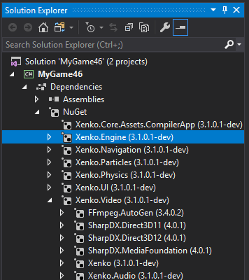

Xenko 3.1 release notes
November 11th, 2019
Highlights
Xenko 3.1 loves NuGet!
Xenko was always a big proponent of NuGet: since first version, Xenko was distributed as a NuGet package.
However, due to limitations (hello packages.config and project.json!), we were leveraging NuGet more as a distribution medium than proper NuGet packages: Xenko 3.0 is still a monolithic single package and it would not work out of the box when referenced from Visual Studio without using Xenko Launcher and Game Studio.
Xenko 3.0 paved the way by making Xenko compatible with the new project system (game projects were referencing Xenko using a PackageReference).

Today, Xenko 3.1 brings Xenko as a set of smaller NuGet package, each containing one assembly, with proper dependencies:

As a result, it is now possible to create a game project that references only the packages you want. Here are a few examples of "core" packages:
Xenko.Engine: allows you to use core engine runtime (including its dependencies)Xenko.Core.Assets.CompilerApp: compile assets at build timeXenko.Core.MathematicsorXenko.Graphics: yes, if you want to make a custom project only using Xenko mathematics or graphics API without the full Xenko engine, you can!Xenko.Core.Assets,Xenko.PresentationorXenko.Quantum: all those piece of tech being used to build Xenko tooling are also available for reuse in other projects. Nothing prevents you from generating assets on the fly too!
Then, various parts of the engine are distributed as optional packages:
Xenko.PhysicsXenko.ParticlesXenko.UIXenko.SpriteStudioXenko.Video
If you don't reference those packages, they won't be packaged with your game either. In many situations, it results in a smaller packaged game and improved startup time.
Also, you are free to replace those functionalities with alternative libraries.
Xenko assets are also distributed as part of package
NuGet packages have a xenko folder containing Xenko assets. As a result, user are able to generate nuget package containing Xenko assets out of the box from Visual Studio and publish them on NuGet for general consumption.
Package layout: following best NuGet practices
Previously Xenko references were added to the project using custom targets.
New packages are now be layout as NuGet/Visual Studio expects them, in folders like lib/net45 and lib/monodroid10.
We still have a few custom MSBuild targets but reduced them to minimum.
Xenko Packages are now distributed on nuget.org
With all those changes, it makes sense to stop distributing Xenko on our custom nuget server and use nuget.org instead.
This will greatly reduce friction to try Xenko (any project would work out of the box in Visual Studio). This might also make our launcher completely optional in the long run.
Xenko tooling resolves assemblies dynamically using NuGet API
Tools such as GameStudio or Asset Compiler are distributed as NuGet packages. However, it won't bundle Xenko Runtime, which will simply be encoded as dependency.
When running those tools, they are resolving Xenko runtime assemblies directly in the NuGet cache.
This allows for distributing those tools as very small and easy-to-upgrade packages, avoiding file duplications. This is similar to what dotnet-cli is doing with deps file.
This brings lot of technical challenges but should allow us in the future to be more flexible in the future to load the exact runtime and plugins that the user project reference rather than the one hardcoded with the tool.
Future: plugin support for editor
Xenko 3.1 editor will still be monolithic: editor support for UI, SpriteStudio, Video and other optional modules will be hardcoded.
However, the target is to get rid of them as soon as possible, and treat them as what they are: plugins.
Full switch to .NET Standard
Xenko supports .NET Standard for most of its runtime assemblies.
Xenko games can run on .NET Core for both Windows and Linux.
Tutorials
Xenko now has a tutorial section in the documentation!
The first project “C# Beginner”, demonstrates 12 beginner programming concepts.
Users will be able to select the tutorial template when creating a new Xenko project to practice and experiment with the code.
Additionally, the code used in the project is directly referenced by the new documentation section which explains each individual tutorial level.
The amount of tutorials, as well as intermediate and advanced tutorials, will be extended/added from now on.
BulletSharp update
Eideren worked on updating our old custom modified version of BulletSharp (the wrapper library we use for our physics engine).
Things should be much easier to maintain from now on.
Changelog
This release also contains numerous improvements, bugfixes and new translations.
Here is the full changelog in all its glory:
Alex (1):
- Fixed spelling error in Quaternion.cs view commit
Allan Nordhøy (9):
- Added translation using Weblate (Norwegian Bokmål) view commit
- Added translation using Weblate (Norwegian Bokmål) view commit
- Added translation using Weblate (Norwegian Bokmål) view commit
- Added translation using Weblate (Norwegian Bokmål) view commit
- Translated using Weblate (Norwegian Bokmål) view commit
- Translated using Weblate (Norwegian Bokmål) view commit
- Translated using Weblate (Norwegian Bokmål) view commit
- Translated using Weblate (Norwegian Bokmål) view commit
- Translated using Weblate (Norwegian Bokmål) view commit
Andrea Aruta (6):
- Added translation using Weblate (Italian) view commit
- Added translation using Weblate (Italian) view commit
- Added translation using Weblate (Italian) view commit
- Translated using Weblate (Italian) view commit
- Translated using Weblate (Italian) view commit
- Translated using Weblate (Italian) view commit
Charles Woodhill (1):
- [UI/INPUT] Expose mouseOverElement view commit
Christian Georgiev (2):
- Added translation using Weblate (Macedonian) view commit
- Translated using Weblate (Macedonian) view commit
Cody Lee (4):
- Added issue templates for bugs and feature requests (#327) view commit
- Moved pull_request_template.md to correct location view commit
- Removed any pluralization of the word question in the question_request.md for consistency view commit
- Updated CONTRIBUTING.md and added a 'submitting changes' section view commit
Daniel Keenan (2):
- Change the ObjectToTypeName value converter to give prettier C# names. (#400) view commit
- [GameStudio] Improve "Add component" button usability. (#411) view commit
Dominik Jančík (6):
- Initial SDL Finger Multitouch support view commit
- Removed lastCtrl field view commit
- FingerSDL GUID view commit
- FingerSDL PointerID generator view commit
- Renamed FingerSDL to PointerSDL view commit
- SDL Touch>Mouse synth. disabled when PointerSDL is used view commit
Eideren (55):
- Include nuget to proj view commit
- Straightforward changes view commit
- Potentially harmful changes view commit
- Minor proj update view commit
- Matrix conversion fix view commit
- Main conversion done, next up the rest of the CharacterComponent view commit
- Character component, waiting on bullet wrapper for the rest view commit
- Static mesh base view commit
- Static Mesh: Update shape factories view commit
- [Core] ThreadPool: shutdown idle threads (#302) view commit
- [Samples] Misc camera controller fixes (#359) view commit
- Fix for #422 view commit
- Revert nugget view commit
- [Bullet] Update libs view commit
- [Bullet] Update projects mapping view commit
- [Bullet] Remove bullet refs within mathematics view commit
- Merge branch 'master' into bulletsharp_nuget view commit
- [Bullet] Rely on our bullet for math conversions view commit
- [Bullet] Finish height field mappings view commit
- [Physics] Remove unused enum and previous namespace import for inlining view commit
- [Bullet] Update all platforms to latest libs view commit
- [Physics] Reduced physics test allocations (#443), cleaned up Simulation view commit
- [Physics] Implement ignore collision between two specific components view commit
- [Physics] In-editor static mesh collider view commit
- [Physics] Avoid duplicate allocations for colliders based on models view commit
- [Physics] Fix initial collider scaling view commit
- [Misc] Exception prone basic functions view commit
- [Transform] Deal with ChildrenCollection todo view commit
- Merge branch 'master' into bulletsharp_nuget view commit
- [Physics] Use asset cloner for shape desc view commit
- Merge remote-tracking branch 'origin/master' into bulletsharp_nuget view commit
- [Physics] Replace ColliderShapes' TrackingCollection view commit
- [Physics] Replace Rigidbody's hacky delegate usage view commit
- [Physics] Rollback unused serialization workaround view commit
- [Physics] Cleanup RigidbodyComponent view commit
- [Physics] Clarify comments in StaticMeshColliderShape view commit
- [Physics] Fix #463 view commit
- [Physics] Fix very large meshes throwing view commit
- [Physics] Expose Capsule's readonly data view commit
- [Physics] Provide read access to collider shape's data view commit
- [Physics] Split static mesh collider into new PR view commit
- [Physics] Fix ShapeSweeps output view commit
- [Physics] Provide public access to callbacks' recycle and buffer view commit
- [Physics] Clarify bullet lib's usage and sources view commit
- [Editor] Fix orbit editor camera stutter view commit
- [Editor] Re-order code execution view commit
- [SceneManagement] Assign Entity.sceneValue before firing events view commit
- [Camera] Fix processor's cameraSlotsDirty not being reset after process view commit
- [SceneManagement] Fix loop skipping items when collection is modified view commit
- Avoid unnecessary alloc view commit
- Deal with Add(), sub-optimal implementation view commit
- [Threading] ThreadPool refactor, reduce allocation, fix wrong argument view commit
- Move PooledDelegateHelper outside lock view commit
- Swap task factory view commit
- [GameSystems] Fix removing systems not clearing it from update and draw view commit
Eric Tuvesson (1):
- Assets Compiler Support MSBuild Toolset Version 16.0 (#421) (fixes #420) view commit
Félix Dion-Robidoux (1):
- Update BACKERS.md view commit
Hyperpred (1):
- Remove cast to Game in AudioSystem (#472) view commit
Jarrett Robertson (1):
- Fixed issue with scene instance using the wrong collection in for loop count view commit
Louies (10):
- Added translation using Weblate (Chinese (Traditional)) view commit
- Added translation using Weblate (Chinese (Traditional)) view commit
- Added translation using Weblate (Chinese (Traditional)) view commit
- Added translation using Weblate (Chinese (Traditional)) view commit
- Translated using Weblate (Chinese (Traditional)) view commit
- Translated using Weblate (Chinese (Traditional)) view commit
- Translated using Weblate (Chinese (Traditional)) view commit
- Translated using Weblate (Chinese (Traditional)) view commit
- Translated using Weblate (Chinese (Traditional)) view commit
- Translated using Weblate (Chinese (Traditional)) view commit
Lucifer (8):
- Added translation using Weblate (Chinese (Simplified)) view commit
- Added translation using Weblate (Chinese (Simplified)) view commit
- Added translation using Weblate (Chinese (Simplified)) view commit
- Added translation using Weblate (Chinese (Simplified)) view commit
- Translated using Weblate (Chinese (Simplified)) view commit
- Translated using Weblate (Chinese (Simplified)) view commit
- Translated using Weblate (Chinese (Simplified)) view commit
- Translated using Weblate (Chinese (Simplified)) view commit
Mario Guerra (10):
- Translated using Weblate (Spanish) view commit
- Translated using Weblate (Spanish) view commit
- Translated using Weblate (Spanish) view commit
- Translated using Weblate (Spanish) view commit
- Translated using Weblate (Spanish) view commit
- Translated using Weblate (Spanish) view commit
- Translated using Weblate (Spanish) view commit
- Translated using Weblate (Spanish) view commit
- Translated using Weblate (Spanish) view commit
- Translated using Weblate (Spanish) view commit
Moustafa khalil (1):
- Update README.md view commit
Nicolas Musset (10):
- [Localization] Update extraction script view commit
- [Localization] Update extracted strings view commit
- [Localization] Update Japanese view commit
- [Localization] Add French view commit
- [Build] Update solution and project view commit
- [Localization] Fix build for path containing spaces (#381) view commit
- [Presentation] Bugfix/int3 editor (#387) (fixes #383) view commit
- [General] Simplify editor and presentation project files view commit
- [General] Fixup rule for .xaml.cs files view commit
- Update .gitattributes view commit
Oscar Sanchez (9):
- Translated using Weblate (Spanish) view commit
- Translated using Weblate (Spanish) view commit
- Translated using Weblate (Spanish) view commit
- Translated using Weblate (Spanish) view commit
- Translated using Weblate (Spanish) view commit
- Translated using Weblate (Spanish) view commit
- Translated using Weblate (Spanish) view commit
- Translated using Weblate (Spanish) view commit
- Translated using Weblate (Spanish) view commit
Phr00t (2):
- [Graphics] Vulkan: add support for R10G10B10A2_UNorm and R11G11B10_Float view commit
- [Input] Fix mouse VirtualButtons view commit
Polymo (1):
- Translated using Weblate (German) view commit
Robin Hübner (2):
- [Physics] correct userdoc for convex hull collider parameters. (#382) (fixes #372) view commit
- Make SDL window user resizable. view commit
Rui Mendes (3):
- Added translation using Weblate (Portuguese) view commit
- Added translation using Weblate (Portuguese (Brazil)) view commit
- Translated using Weblate (Portuguese) view commit
Scorp-121 (4):
- Added translation using Weblate (Russian) view commit
- Added translation using Weblate (Russian) view commit
- Added translation using Weblate (Russian) view commit
- Added translation using Weblate (Russian) view commit
Scorp121 (10):
- Translated using Weblate (Russian) view commit
- Translated using Weblate (Russian) view commit
- Translated using Weblate (Russian) view commit
- Translated using Weblate (Russian) view commit
- Translated using Weblate (Russian) view commit
- Translated using Weblate (Russian) view commit
- Translated using Weblate (Russian) view commit
- Translated using Weblate (Russian) view commit
- Translated using Weblate (Russian) view commit
- Translated using Weblate (Russian) view commit
SleepyMode (1):
- [Mathematics] Fixes for Color/ColorRGBA float/byte mismatches (#258) (fixes #251) view commit
Swann Martinet (2):
- Translated using Weblate (French) view commit
- Translated using Weblate (French) view commit
Tebjan Halm (6):
- Quick fix as suggested by @xen2 in chat to avoid crash in shader compiler (#343) view commit
- Added translation using Weblate (German) view commit
- Translated using Weblate (German) view commit
- Resetting shader key scope for multi pass materials (#456) view commit
- added xenko-community-project to README.md (#514) view commit
- Fix DataBaseFileProvider cast (#538) view commit
Virgile Bello (510):
- [Design] VisualStudio.Project doesn't need a reference to Solution anymore view commit
- [Assets] Package can now also represent a csproj + package (only new game creation is working) view commit
- [Assets] Removed AssetItem.SourceProject view commit
- [Assets] Move assets to Assets folder for now view commit
- [Assets] Fix project loading view commit
- [Assets] Simplified Package.Profiles into Package.Profile view commit
- [Assets] Removed PackageProfile.ProjectReferences view commit
- [Assets] Removed PackageProfile.Name view commit
- [Assets] Allow creation of samples (as long as they don't use external packages) view commit
- [Assets] Added the concept of Package container (project or standalone) view commit
- [Assets] Turned Session.Packages into a readonly collection view commit
- [Assets] Properly process dependency graph using remote info to perform package upgrades before downloading nuget packages view commit
- [Assets] Removed LocalDependencies and fixed TemplateSampleGenerator view commit
- [Assets] Fix platform update view commit
- [Assets] AssetCompiler now works against .csproj view commit
- [Assets] Fixed asset compiler get-graphics-platform view commit
- [Assets] Fix view models to allow selection as current project view commit
- [Assets] Properly regenerate platforms for sample templates view commit
- [Assets] Ignore assets from executable projects (computed automatically) view commit
- [Templates] Moved template packs assets from Assets/Shared to Assets view commit
- [Assets] NewGameTemplateGenerator: assets were loaded twice, resulting in issues later with cloned AssetItem (fix asset packs) view commit
- [Templates] Simplify platform projects view commit
- [Templates] Moved templates packges asset folders from Assets/Shared to Assets and removed intermediate solution folders view commit
- [Assets] Adjust PackageProfile.ResourceFolders during package upgrade view commit
- [Templates] Sample Templates now works (asset packs are now ProjectReference and their assets are properly copied during template generation) view commit
- [Assets] Properly get namespace from project view commit
- [Assets] Fix CodeViewModel to use ProjectCodeViewModel view commit
- [Assets] Fix platform updates view commit
- [Assets] Rearranged templates for the new xkpkg = csproj change (note: project delete is broken) view commit
- [Assets] Package.Profile is now properly deserialized by discarding default value view commit
- [Assets] Removed PackageProfile.Platform view commit
- [Build] Make sure Package.Id stays is in sync with .sln one view commit
- [Assets] Removed Package.Id view commit
- [Assets] Removed PackageProfile view commit
- [Assets] Stop adding default folders in Package ctor view commit
- [Assets] Reunified ProjectState and PackageState view commit
- [Assets] Moved Package.Save() to PackageContainer.Save() view commit
- [Assets] Avoid creating .xkpkg for projects without one in the first place (use implicit one instead) view commit
- [Assets] Rework package dependencies view commit
- [Assets] Also support loading sln with new csproj Guid view commit
- [Assets] Support Packing and consuming simple NuGet packages with Xenko assets view commit
- [Assets] New game template: set current project to Windows view commit
- [Assets] Simplified NuGet package restore (only happens during PreLoadPackageDependencies) view commit
- [Assets] Update Code library template to match others view commit
- [Targets] Stop using XenkoDir.cache file during build view commit
- [Build] Bump to 3.1.0.1 view commit
- [Assets] Store pendingPackageUpgrades in PackageSession view commit
- Merge remote-tracking branch 'origin/master' into onecsproj_onexkpkg2 view commit
- Merge branch 'master' into onecsproj_onexkpkg2 view commit
- [Assets] Process dependencies for RootAssets in view model view commit
- [Assets] Made !file and !directory tags mandatory in Yaml for easier dependency analysis view commit
- [Assets] Temporary fixes for root assets and default scene opening view commit
- [Assets] Pack assets using actual package data rather than hardcoded rules view commit
- [Build] Reorganize build system (WIP) view commit
- [Build] NuGetAssemblyResolver WIP view commit
- [Engine] Move default assets to individual assemblies rather than global Xenko.xkpkg view commit
- [Assets] Compiler: can now properly compile existing projects view commit
- [Launcher] Fix launcher build view commit
- [Editor] Temporarily moved game studio shaders to Engine, until we have proper design-time package references view commit
- Merge branch 'master-3.0' into onecsproj_onexkpkg2 view commit
- [Build] Use RuntimeIdentifier to separate graphics API runtimes view commit
- [Build] Improved cross compilation view commit
- [Build] Renamed XenkoRuntime into XenkoNETRuntime view commit
- [Build] Added XenkoRuntime flag view commit
- [Assets] project.Type evaluation needs to be done after package are restored view commit
- [Assets] Reorganized templates view commit
- [Assets] Fix package upgrader view commit
- [SpriteStudio] Added templates view commit
- [Assets] Properly find ffmpeg.exe and msdfgen.exe view commit
- [Assets] Move VHACD to Assets assembly and properly bundle C# wrapper view commit
- [Assets] Compiler: use thread-safe version of NuGet (when writing lock file) view commit
- [Deps] Switched to NuGet version of Xceed.Wpf.Toolkit/Datagrid/AvalonDock view commit
- [Build] Bump to .NET 4.7.2 view commit
- [Build] Adjust bindings for System libraries with 4.7.2 changes view commit
- [Deps] Xenko.Metrics and Xenko.CrashReport are now packaged with NuGet view commit
- [Build] Lot of adjustments for new NuGet resolver system (incl ConnectionRouter, VS Package, etc...) view commit
- [Samples] Moved samples from Xenko.Assets.Presentation to a dedicated project to have faster rebuild view commit
- [Assets] Some improvements so that unit tests can compile view commit
- [Assets] Some improvements so that unit tests can compile view commit
- [Build] Removed XenkoDir environment variable view commit
- [Assets] Fixed templates to have proper assembly names and namespaces view commit
- [Build] Readded support for UWP view commit
- [Build] Readded support for Android view commit
- [Build] Readded support for iOS view commit
- [Build] Optimized ProjectReferences view commit
- [Build] Check Visual C++ Runtime is properly installed as part of build targets view commit
- [Build] Added Xenko.PackageInstaller to Xenko.GameStudio view commit
- [Build] Use "XenkoPlatforms" to specify which platforms to build view commit
- [NuGet] Upgrade to 4.9 and use RestoreRunner to have faster noop restore on second run view commit
- [Tests] Fix build of some test projects view commit
- [Build] Also deletes .nupkg.metadata on package auto deploy (https://github.com/NuGet/Home/wiki/Nupkg-Metadata-File) view commit
- [Build] Make sure user projects are always built so that compiler app is checking assets again (until we feed "fast up to date" with proper inputs/outputs) view commit
- [Assets] Make sure to explicitly include Xenko.Core for its targets until VS2019 enables it by default (https://github.com/NuGet/Home/issues/6091[#](https://github.com/xenko3d/xenko/issues/)issuecomment-438073285) view commit
- [Assets] Don't include package targets when evaluating project files view commit
- [Assets] Order windows executable project first in solution files (sln) so that VS uses them as startup project by default view commit
- [Build] Added some docs related to new build system view commit
- Merge remote-tracking branch 'origin/master' into onecsproj_onexkpkg2 view commit
- [Build] Fix iOS solution view commit
- [Build] Moved PackAssets task in Xenko.Core.Tasks view commit
- [Build] Use PackAssets as an exe rather than a Tasks so that MSBuild doesn't lock the files (annoying when rebuilding) view commit
- [NuGet] Log everything view commit
- [NuGet] Restore inside assembly resolver to avoid deadlock and rewrote logging code view commit
- [Build] Only build default graphics platform when opeining sln unless we explicitly set XenkoGraphicsApiDependentBuildAll view commit
- [NuGet] Perform nuget resolve only for entry assembly view commit
- [Assets] Better resolution of project platform (needed so that windows project is auto selected) view commit
- [Build] Fix build when choosing a single graphics API view commit
- [NuGet] Add dev store before trying to restore packets view commit
- [Build] Removed Xenko.xkpkg view commit
- [Build] Moved PackageUpdateVersionTask to a separate assembly to simplify build view commit
- [Build] Unify version management in a single file (except for samples which will be versioned separately) view commit
- Merge remote-tracking branch 'origin/master-3.0' view commit
- [Build] Added package details view commit
- [Build] Output nupkg in bin\packages view commit
- [Build] Xenko.Samples.Templates: add missing dependency view commit
- [NuGet] If restore failed, try to kill known blocking processes (Connection Router, CompilerApp, etc...) view commit
- [NuGet] Improve logging if restore failed view commit
- [Build] Remove non-existing files from Xenko.sln view commit
- [NuGet] Use SourceCacheContext to avoid ArgumentException view commit
- [Build] Sign dll/exe when building package view commit
- [Build] Also sign Launcher executables view commit
- [Build] Escape/Unescape XenkoPlatforms for properly passing info from Xenko.build to targets view commit
- [Build] Package build improvements view commit
- [Build] Package build improvements (part 2) view commit
- [Build] Signing tool was mistakently always enabled view commit
- [Build] Package build improvements (part 3) view commit
- [Setup] Update to Advanced Installer 15.5.1 view commit
- [Build] Remove invalid character from Xenko.build view commit
- [Build] Fix Linux Vulkan build view commit
- [Build] Added bin/packages/.gitignore file view commit
- [Build] Fix restore phase in Xenko.build view commit
- [Build] Removed Xenko.SamplesBootstrapper and fixed Xenko.Samples.Tests view commit
- [Samples] Fixed Xenko.Shaders.Tests view commit
- [Build] Use active build configuration rather than forcing Debug view commit
- [Build] Stop using Bin\Windows for unit tests view commit
- [NuGet] Couldn't resolve EnvDTE.dll view commit
- [Assets] Don't try to load vcxproj as package view commit
- [Samples] PhysicsSample: Update for Vector3 Gravity view commit
- [Tests] Xenko.Assets.Tests: Don't compile assets view commit
- [Tests] Fixed some unit tests view commit
- [Tests] Fixed folder for gold image view commit
- [Launcher] Ignore server-side dev packages view commit
- [Assets] Fixed TestBasicPackageCreateSaveLoad view commit
- [Assets] Package upgrade is now working for 3.0 projects view commit
- [NuGet] Update to NuGet 4.9.1 view commit
- [Launcher] Ignore invalid NuGet sources (404, 401, etc...) view commit
- [VSPackage] Fix build of test project view commit
- [Launcher] Bump to 3.0.1 view commit
- [Assets] User can now create GameSettings freely (need to display warning if nothing matching expected name?) view commit
- [CompilerApp] Removed unused GetGraphicsPlatform code view commit
- [Build] Removed obsolete target files view commit
- [Build] Xenko.build now properly build Launcher view commit
- [Build] Switching unit tests to new targets view commit
- [VSPackage] Fix Xenko.build targets view commit
- [Build] Clean packages before full package build view commit
- [GameStudio] Asset editors close button is back view commit
- [Graphics] Removed PreferredGraphicsPlatform from RenderingSettings view commit
- [VSPackage] Fix build when using multiple XenkoPlatforms view commit
- [Build] Adjust package versioning so that NuGetVersion doesn't contain build metadata view commit
- [Native] Explicitly require related Assembly when loading native library (we can't use GetCallingAssembly as it might be wrong due to optimizations) view commit
- [Native] PreloadLibrary: Use type rather than assembly (to avoid use of GetTypeInfo() everywhere) view commit
- [GameStudio] About page: added markdown files to package view commit
- [Launcher] Few fixes so that launcher properly separate view commit
- [GameStudio] About page: display version with build metadata view commit
- [Build] Force cross-targeting if there is multiple RuntimeIdentifiers view commit
- [Launcher] Stay compatible with Xenko 1.x/2.x view commit
- [Build] Properly fix how RuntimeIdentifier is used for multi graphics API per platform view commit
- [Assets] Solution file was generated with empty DefaultVisualStudioVersion view commit
- [OpenTK] Use win7 runtime rather than win view commit
- [Assets] Made DefaultVisualStudioVersion public again view commit
- [Build] Properly forward XenkoGraphicsApiDependentBuildAll view commit
- [Build] Workaround: Remove RuntimeIdentifier from Solution references (https://github.com/onovotny/MSBuildSdkExtras/issues/139) view commit
- [Assets] Make sure solution/project path use backslashes view commit
- [Particles] Remove ambiguities in data member order view commit
- [Assets] Keep solution folders, just remove package info view commit
- [Assets] Improve package upgrade when there is no ProjectReference view commit
- [Samples] Updated samples view commit
- [Samples] Removed Xenko.Navigation where not needed view commit
- [Samples] Removed Xenko.Physics where not needed view commit
- [Assets] Make sure implicit packages have IsDirty set to false when loaded view commit
- [Assets] Fix asset upgrade view commit
- [GameStudio] Fixed template samples generator to work with updated project format view commit
- [Samples] Updated with 3.1 (step 2) view commit
- [Samples] Keep Xenko.Particles for now, until we have better extensibility in Graphics Compositor view commit
- [Assets] Allow some assets to be non-referenceable (asset name collision is allowed in this case because they exist only at compile-time). This is used for scripts, otherwise they can't have same name as an asset. view commit
- [Assets] PackAssets: skip excluded files view commit
- [Settings] Remove the !file when serializing setting keys view commit
- [Build] Package necessary WindowsAPICodePack assemblies with Xenko.Core.Presentation.Dialogs view commit
- [Build] XenkoPlatform was not properly set for Linux platforms view commit
- [Assets] PackageUpgrader: react to multiple package names (to support renames and/or package splits in multiple parts) view commit
- [GameStudio] Improve default asset selection to match opened asset editors view commit
- [Assets] Compiler: Move default asset build path to obj\xenko\assetbuild view commit
- [Build] Changed dev/beta versioning to permit upgrading between interleaved dev and beta releases (betaXX.YYYY format with XX = asset version and YYYY = git height) view commit
- [Build] Generate ref folder for all platforms (otherwise Android/iOS/UWP might fallback to ref/netstandard2.0 of Linux) view commit
- [Build] Fix Android build due to lack of NuGetRuntimeIdentifier view commit
- [Templates] Remove the _Game from sample templates view commit
- [Build] Adjust PackageVersion for sample templates according to XenkoOfficialBuild rather than XenkoPackageBuild view commit
- Updated BACKERS.md view commit
- [Launcher] Display source in tooltip for Xenko downloads view commit
- [VSPackage] Various fixes so that shader highlighting/goto works view commit
- [Build] Updated UWP to use uap10.0.16299 view commit
- [UWP] Simplified some code (can now use Thread and other newer API) view commit
- [Build] Hide Microsoft.NETCore.UniversalWindowsPlatform from references and update build doc view commit
- [Build] Fix Xenko.Shaders.Tests name view commit
- [Assets] New Game template was not properly copying asset package files view commit
- [GameStudio] Use same build folder for game studio as for actual game build view commit
- [Templates] Fixed Linux template view commit
- [Templates] Fixed UWP template view commit
- [Build] Use win instead of win7 runtime identifier view commit
- [Templates] Additional fix for Linux template view commit
- [Templates] Linux: adjust default runtime identifier view commit
- [Launcher] Various fixes for downloading and error reporting view commit
- [Launcher] Bump to 3.0.4 (3.0.3 was built with incorrect source changes) view commit
- [VSPackage] Fix NuGet assembly resolve (avoid infinite loop) and handle properly non-Xenko solutions (fixes #298) view commit
- [Editor] Properly report solution load/save exception to log view commit
- [Reflection] Rewrote part of AssemblyContainer to handle deferred loading view commit
- [Build] Updated to MSBuild.Sdk.Extras version 1.6.65 (compatible with VS2019) view commit
- [Build] Use $(RoslynTargetsPath) rather than $(MSBuildBinPath)\Roslyn (which doesn't work with VS2019) view commit
- Change link+badge for chat from gitter to discord view commit
- [Build] Use netstandard2.0 version of OpenTK view commit
- [Build] Switch to netstandard2.0 wherever possible for the runtime view commit
- [Build] Switch game projects to use netstandard2.0 view commit
- [Build] Fix Windows+Linux build view commit
- [Build] Hide Microsoft.NETCore.UniversalWindowsPlatform from references and update build doc view commit
- [Build] Fixed build of RenderDocPlugin view commit
- [Build] Additional fixes for single 3d graphics API build mode view commit
- [Templates] Patching of TargetFramework section is now forcing netstandard2.0 view commit
- [Templating] Switch to latest version of Mono.TextTemplating (t4) and add reference to netstandard view commit
- [Build] Various fixes for .NET Standard build view commit
- [Build] Bump Android SDK version from 5.0 to 8.1 (Google Play recent requirement for new app and .NET Standard 2.0 also requires 8.0+) view commit
- [Build] Force references to be added only for direct and explicit package references view commit
- [Build] Properly forward XenkoGraphicsApi when building a single graphics platform view commit
- [Build] Make sure to override RuntimeIdentifiers on UWP otherwise it builds all CPU versions and result in write conflicts view commit
- [Build] Use "any" instead of "win" view commit
- [Build] Make sure "win" is the default when building a netstandard2.0 reference (to make sure a RID-specific project always use RID) view commit
- [Build] Define output path (otherwise using a Platform might override them) view commit
- [Build] Properly setup RuntimeIdentifier if it was not a Graphics-API-specific one view commit
- [Build] Pack Xenko assets as part of NuGet packaging view commit
- [Build] Fix the NuGet publish build file view commit
- [Build] Removed unnecessary solution references view commit
- [Build] Properly compute & restrict RuntimeIdentifier for ProjectReference view commit
- [Build] Better detection of default RuntimeIdentifiers view commit
- [Build] Fix RuntimeIdentifiers detection for graphics API mode view commit
- [Build] Adjust RuntimeIdentifier and XenkoPlatform detection view commit
- [Launcher] Remove custom Http code and decrease concurrency (which might be problematic since our packages are bigger than average) view commit
- [Launcher] Switch from gitter to discord view commit
- Updated BACKERS.md view commit
- [Launcher] Bump to 3.0.5 view commit
- Update Crowdin configuration file view commit
- Update Crowdin configuration file view commit
- [Launcher] Skip unlisted packages, and don't use cache view commit
- [Launcher] Also use normal output data for error output of PackageInstall.exe view commit
- [Physics] Enable PhysicsShapesRenderingService only if there is a IGraphicsDeviceService view commit
- Update BACKERS.md view commit
- Merge remote-tracking branch 'origin/master-3.0' view commit
- [Physics] Add comment for PhysicsShapesRenderingService creation view commit
- [Build] Added option XenkoPublishSkipSamplesTemplates view commit
- [Build] Adjust platform detection (broken for multiplatform) and preparations for OSX view commit
- [Build] Additional fixes for computing runtime identifiers view commit
- [Build] Further fixes for computing runtime identifiers view commit
- [Build] Run Visual C++ checks only on .NET Framework MSBuild view commit
- [Build] Additional setup for macOS build view commit
- Merge pull request #323 from Kryptos-FR/feature/l10n view commit
- [Build] Native: Generate only x64 for macOS (.NET Core only supports x64) view commit
- [Graphics] Update to SDL 2.0.9 view commit
- [Graphics] SDL: Load from proper directory view commit
- [Shaders] Added macOS glslangValidator view commit
- [Shaders] Vulkan: Add "NoSampler" to reflection view commit
- [Core.IO] Disable LockFile code from macOS (not supported) view commit
- [Core] Copy native libs for more platforms, and only if CopyLocalLockFileAssemblies is not set to false view commit
- [Build] macOS: Update NativePath to latest version view commit
- [Graphics] Update SharpVulkan (works on OSX and easier to access NativeHandle) view commit
- [Graphics] macOS: Added MoltenVK view commit
- [GameStudio] Added project template for macOS view commit
- [Localization] Use $(RoslynTargetsPath) rather than $(MSBuildBinPath)\Roslyn (which doesn't work with VS2019) view commit
- [Samples] Templates: Added Cache to list of ignored folders (can be leftover from build during previous Xenko versions) view commit
- [Graphics] macOS: Updated MoltenVK view commit
- [Assets] PackAssets: Use proper asset path when computing resources relative paths (fixes #326) view commit
- [VSPackage] Upgrade version to 3.0.3. Add support for VS2019. New release needed since RestoreHelper.cs was updated (fixes #324) view commit
- Update license for 2019 view commit
- Update BACKERS.md view commit
- [Build] Copy .xml and .pdb from NuGet package references when using new csproj format view commit
- [VSPackage] Run VSIX installer only for VS2017+ (fixes #332) view commit
- [Build] Use latest version of Windows 10 SDK view commit
- [Build] Update requirements view commit
- [Build] Publish was not properly copying native libs and compiled assets (fixes #331 and #334) -- thanks to jazzay for the initial implementation view commit
- [VSPackage] Make ProjectReference between Commands and Package private so that it doesn't exist as a NuGet dependency view commit
- [VSPackage] Add TODO for restore log view commit
- [Build] Native: use vcxproj directly to avoid TRK0005: Failed to locate: "link.exe" or "cl.exe" (fixes #337) view commit
- [Build] Properly include install-prerequisites.exe next to Xenko.GameStudio packageinstall.exe view commit
- [Install] Prerequisites installer: improve error reporting and retries (i.e. UAC not clicked) when installing Visual Studio or Build Tools view commit
- [Install] Prerequisites: Update to VC++ 2017 prerequisites view commit
- [Install] Prerequisites: Add ".NET Core 2.1 development tools" to list of Visual Studio prerequisites view commit
- [Install] Prerequisites: Improve Visual Studio detection/update mechanism view commit
- Update BACKERS.md view commit
- [GameStudio] Switch to Roslyn 2.10 view commit
- [Assets] PackAssets: properly copy RootAssets (fixes #347) view commit
- [Assets] Perform null check before upgrading PackageProfile view commit
- [Assets] PackageSession: Properly fallback to AssemblyName if PackageId is not set view commit
- [Assets] Remove asset upgrader code for versions before 3.0 view commit
- Explain how CLA is to be signed. view commit
- Update BACKERS.md view commit
- [Build] NuGetVersion reported to TeamCity was wrong view commit
- [VR] Fix UWP build (#213) view commit
- [Build] Add XenkoBuildDoc parameter to force TargetFramework even if not specified (seems necessary for older version of Roslyn used in docfx) view commit
- [GameStudio] Add missing RoslynPad assemblies in the composition context view commit
- [GameStudio] Allow drag & dropping of read-only assets (as long as they wouldn't be modified) view commit
- [GameStudio] CodeLibrary projects were not properly initialized (assets couldn't be created) view commit
- [Build] Sign packageinstall.exe view commit
- [Build] Include RoslynPad assemblies with Xenko.Assets.Presentation package view commit
- Update ContributorLicenseAgreement.md view commit
- [Build] Unlocking C# 7.3! view commit
- [Core.Design] AssemblyContainer: Process deps.json files (fixes #365, fixes #342) view commit
- Merge branch 'master-3.0' view commit
- [Physics] Fix ColliderShapeAsset upgraders (was previously enclosed in XENKO_SUPPORT_BETA_UPGRADE) view commit
- Merge remote-tracking branch 'origin/master-3.0' view commit
- Merge remote-tracking branch 'origin/master-3.0' view commit
- [Build] Add option -NoSymbols to nuget push view commit
- [Graphics] D3D: add support for using typeless textures view commit
- [Reflection] AssemblyContainer: return already loaded assemblies if AssemblyName matches rather than loading new one (it seems that assembly is requested several times because we are not loading in the proper load context) view commit
- [Build] runtime.json: fix spacing view commit
- [Build] Added new CPU-specific variants to runtime.json (#370) view commit
- [Build] Bumped LLVM to 7.0.1 view commit
- [Render] Decouple RenderParticleEmitter from ECS view commit
- [Render] Decouple RenderUIElement from ECS view commit
- [Render] Decouple RenderMesh and others from ECS view commit
- [Rendering] Remove various dependencies from lighting code to LightComponent view commit
- [Rendering] Removed SceneInstance dependency from rendering code view commit
- [Rendering] Removed dependency from VisibilityGroup to ShadowMapRenderView view commit
- [Rendering] LightSkybox: Removed obsolete comment view commit
- [Rendering] Moved RenderGroup class to Rendering namespace view commit
- [Rendering] PostFX: remove dependency to CameraComponent view commit
- [Rendering] ShadowMapRenderer: remove unused nested class view commit
- [Rendering] ForceAspectRatioSceneRenderer: Made default aspect ratio local to remove dependency to CameraComponent view commit
- [Engine] Moved IndexingDictionary to Xenko.Core view commit
- [Rendering] EffectSystem: Remove dependency to Game class and move EffectCompilationMode in the same namespace view commit
- [Rendering] EffectSystem: Moved CreateEffectCompiler in a separate static class outside of Rendering code view commit
- [Rendering] Made ForwardLightingRenderFeature not dependent on LightProcessor anymore view commit
- [Rendering] Made LightProbe code not dependent on LightProbeProcessor anymore view commit
- [Rendering] Made LightShafts independent from LightShaftProcessor view commit
- [Rendering] Fixed RenderContext.GetCurrentCamera() tag owner view commit
- [Streaming] Removed dependency on Engine.Game view commit
- [Rendering] Splitted most of low-level rendering code into a new Xenko.Rendering assembly view commit
- [SpriteStudio] Fixes for SpriteStudio to work properly again view commit
- [Rendering] Make Xenko.Rendering platform-specific view commit
- [TextTemplating] T4: use a custom version of Mono.TextTemplating, including https://github.com/xen2/t4/commit/0d0b6db3ca3aba82fd7597951be2361265043e5e view commit
- [Serializaton] Bump format version (Rendering split) view commit
- [Build] Bump to beta02 view commit
- [Build] Fix .usrdoc generation and copy (fixes #377) view commit
- [NuGet] Remove deleted xenko sources during startup to avoid restore failures (fixes #338) view commit
- Merge remote-tracking branch 'weblate/master' view commit
- [Localization] Added Russian as a supported language view commit
- [Localization] Added a few missing important translations (which were omitted for ApplicationCommands) view commit
- [CrashReport] Bumped crash report to 1.0.1 (force HTTPS), anonymize reports and make sure it doesn't conflict with NuGetAssemblyResolver view commit
- [Localization] Updated po files view commit
- [Build] Regenerated sln (which were invalid since Xenko.Rendering was added) view commit
- [Samples] Removed reference to RenderContext.SceneInstance (fixes #386) view commit
- Merge remote-tracking branch 'weblate/master' view commit
- Merge remote-tracking branch 'weblate/master' view commit
- [Localization] Only generated when building Release, and added Russian in Xenko.Editor view commit
- [Localization] Added support for German and Spanish view commit
- [Localization] Rearranged targets so that localization code is unified view commit
- Merge remote-tracking branch 'weblate/master' view commit
- [Localization] Added support for Chinese (Simplified) view commit
- [Setup] Don't delete top level installation folder if not empty (esp. if it was installed in a root folder containing other programs by mistake!) view commit
- [Launcher] Use cache but always refresh it, even when installing. view commit
- [Launcher] Set LauncherApp as default project view commit
- [Launcher] Bump to 3.0.6 view commit
- [Templates] Fix version in reference to Xenko.Samples.Templates package view commit
- [Rendering] Add Sprite to rendering only if it's enabled view commit
- [Rendering] Properly register Xenko.Rendering in AssemblyRegistry (fixes #409 and fixes #410) view commit
- Update BACKERS.md view commit
- Merge remote-tracking branch 'weblate/master' view commit
- [GameStudio] Fast-reloading for types such as Material and Texture were not working as expected, forcing a full model reload on every edit view commit
- [GameStudio] Fix for fast-reloading view commit
- [GameStudio] Rewrote and simplified code for fast reloading (also support cases such as material layers properly now) view commit
- [GameStudio] AvalonDock: Fix a bug in AvalonDock 3.4.0 which sets CanClose to false once a LayoutAnchorable is dragged into a new floating window or a new pane. view commit
- [Physics] CleanContacts was working on previousFrameContacts rather than currentFrameContacts, resulting in warnings "Pair not present". Thanks @EternalTamago for the fix! (fixes #88) view commit
- Update BACKERS.md view commit
- [Graphics] D3D11: Begin/End were not reentrant because of how Query were used (#427 #428) view commit
- Merge remote-tracking branch 'origin/master-3.0' view commit
- [Audio] Encode little bit longer to compensate for encoding delay (fixes #350) view commit
- [Build] Make sure _XenkoGenerateDependencies runs in all situations (otherwise unit tests won't work) view commit
- [Build] Make sure _XenkoGenerateDependencies runs also for C++ projects view commit
- [Build] Readjust _XenkoGenerateDependenciesAfterBuild target/comments view commit
- [Build] Unit tests: use proper xunit.console.exe depending on x86 or x64 view commit
- [Tests] Fix sample games unit tests view commit
- [Samples] Fix Sprite Studio demo (missing reference to SpriteStudio runtime) view commit
- [Editor] Preview View Model was not properly removing event handlers (fixes #438) view commit
- [Launcher] Improve log/error message in an attempt to investigate #310 view commit
- [NuGet] Switch to NuGet 5.0 view commit
- [Build] Require VS2019 instead of VS2017 to take advantage of new NuGet buildTransitive feature view commit
- [Build] Removed obsolete props files view commit
- [Build] Update NuGet.exe to 5.0 view commit
- [Build] Update build instructions view commit
- [VSPackage] Update to new AsyncPackage and upgrade/cleanup unecessary PackageReference view commit
- [Build] Bump MSBuild.Sdk.Extras to 2.0.24 view commit
- Merge remote-tracking branch 'origin/master' into vs2019 view commit
- [AssemblyProcessor] Fix a case where ImportReference was not called for GetTypeFromHandle(). Bumped Cecil to NuGet 0.10.3 rather than custom one. view commit
- [Assets] Added a new KeepReferences flag to AssetCloner view commit
- [Build] Stop detecting Android NDK version using folder name (latest VS2019 uses "ndk-build" folder name without version) view commit
- [Build] VS2019 now understand WindowsTargetPlatformVersion being set to 10.0 rather than a specific version. Also bump PlatformToolset to v142 view commit
- [Build] Converted some design-time libraries to .NET Standard 2.0 view commit
- Revert "[AssemblyProcessor] Fix a case where ImportReference was not called for GetTypeFromHandle(). Bumped Cecil to NuGet 0.10.3 rather than custom one." view commit
- [AssemblyProcessor] Fix a case where ImportReference was not called for GetTypeFromHandle(). view commit
- [Assimp] Added error details if something went wrong (and test if scene is null to avoid NullReferenceException). view commit
- Merge remote-tracking branch 'weblate/master' view commit
- [Build] Reorganized targets to more easily choose multiple graphics platforms at once. view commit
- [Build] Bumped sln to use VS2019+ view commit
- Revert "[Build] Reorganized targets to more easily choose multiple graphics platforms at once." view commit
- [Build] Reorganized targets to more easily choose multiple graphics platforms at once. view commit
- [Build] Removed deprecated Android armeabi CPU architecture (fixes #461) view commit
- [Vulkan] Back buffer: add missing ViewType parameter (2D) when creating back buffer view commit
- [Build] Android: Bump TargetSdkVersion to API level 27 (matches VS2019 install and TargetFrameworkVersion set in csproj) view commit
- [Launcher] NuGet: 1 hour timeout instead of 100 seconds as a workaround for https://github.com/NuGet/Home/issues/8120 (fixes #310) view commit
- [Launcher] Bump to 3.0.8 view commit
- Revert "[Assimp] Updated assimp to official 4.1.0 and updated references in projects (closes #458)" view commit
- [Build] Removed armeabi libraries to completely fix #461 (fixes #470) view commit
- [Build] Android: unify all minSdkVersion to 16 and targetSdkVersion to 27 (fixes #469) view commit
- [VSPackage] Bump to 3.0.5 view commit
- [Physics] Renamed NewShapeFromDesc to CreateShape view commit
- [Launcher] Allow to select Xenko version view commit
- [Build] Bumped Cecil to NuGet 0.10.4 rather than custom one. view commit
- [Physics] Update README.md with new BulletSharpPInvoke repo location view commit
- Merge pull request #289 from Eideren/bulletsharp_nuget view commit
- [Physics] Fix typo in PhysicsEngineFlags.ContinuosCollisionDetection (fixes #152) view commit
- [Build] Properly copy back IntDir/OutDir to IntermediateOutputPath/OutputPath for C++ project view commit
- [Input] Fix SDL key mapping for 0 and 1 view commit
- [Build] Updated editorconfig to contain VS2019 default style (which we use in Xenko) view commit
- [Build] XenkoContent: do not include in NuGet package as Content view commit
- [Graphics] Compare InputElements length before comparing elements view commit
- [Graphics] Remove unecessary GraphicsDevice.ThreadCount view commit
- [SDL] AppActivated and AppDeactivated were reverted view commit
- [Vulkan] Fix validation for texture upload view commit
- [Vulkan] Update glslang to 7.11.3214 (May 2019) view commit
- [Vulkan] PipelineState: Entry point name could be GC before used view commit
- [Vulkan] PipelineState: Properly set PrimitiveRestartEnable view commit
- Revert "[Graphics] Vulkan: add support for R10G10B10A2_UNorm and R11G11B10_Float" view commit
- [Vulkan] Fixed memory barriers for Clear functions view commit
- [Vulkan] UpdateSubresource: Fixed memory barrier view commit
- [Vulkan] Fixed mixup between Clear DSV and RT view commit
- [Build] Android: Updated to NDK r19 (with proper version check) and remove our custom libc++abi (first step for #460 and #379) view commit
- [Build] Android: Avoid "error MSB4044: The "FilterAssemblies" task was not given a value for the required parameter "DesignTimeBuild"." with latest Xamarin.Android view commit
- [Audio] Android: Updated OpenSLES header (which were incompatible with arm64 due to SLuint32 mapping to long instead of int) (fixes #379) (fixes #460) view commit
- [Setup] Upgraded Visual C++ prerequisites to latest VS2019 ones view commit
- [Assimp] Properly copy Xenko.Assimp.*.dll (fixes #465) view commit
- Merge remote-tracking branch 'weblate/master' view commit
- [Build] Android: Workaround for https://github.com/onovotny/MSBuildSdkExtras/issues/174 view commit
- [Build] Transformed Xenko.Core.BuildEngine into a .NET Standard assembly view commit
- [Build] NETStandard: Switch from AssemblyBuilder.DefineDynamicAssembly view commit
- [Build] NETStandard: Remove unnecessary using view commit
- [Quantum] Renamed Index into NodeIndex to avoid clash with future System.Index view commit
- [Build] NETStandard: Remove unnecessary using view commit
- [Assets] Switch from implicit project to explicit project if necessary (fixes #442) view commit
- [Build] Switched to MSBuild.Sdk.Extras version 2.0.41 view commit
- [Build] Doc: Copy .xml file in ref folder view commit
- Revert "[Build] Switched to MSBuild.Sdk.Extras version 2.0.41" view commit
- [Build] Moved Microsoft.NETCore.Platforms reference from Xenko.Graphics to Xenko.Core (otherwise scenarios like referencing only Xenko.Core with win-x64 doesn't work) view commit
- [VSPackage] Syntax highlighting service was not properly registered asynchronously (fixes #651651) view commit
- [VSPackage] Fix Xenko detection view commit
- [VSPackage] Bump version to 3.0.6 view commit
- [Build] Replaced
to for shaders/effects view commit - [VSPackage] Add a launchSettings.json with proper parameters for easier debugging view commit
- [Input] SDL: fix OemPlus/Minus mapping (thanks nes) view commit
- [UI] Fix comment view commit
- [Vulkan] Fix some memory barriers in CommandList.Copy and CopyRegion view commit
- [Vulkan] CommandList: Don't use ImageView.Null in DescriptorImageInfo view commit
- [Streaming] Load a few initial mipmaps for streamed texture (otherwise they start as completely uninitialized: bad for rendering, and causes crash on Vulkan) view commit
- [Shaders] Fixed precompiled shader code generation view commit
- [Shaders] Added ElementType info to reflection for buffers/textures view commit
- [Vulkan] Properly store info if a texel buffer need to be integer or float. view commit
- [Shaders] Make sure NoSampler is added before computing list of resource groups (otherwise it ends up having no location attribute) view commit
- [Input] Fixed copyrights view commit
- [VSPackage] Fix Xenko version detection to work not only with nuget packages but also solution projects, so that it works with Xenko solution itself. view commit
- Merge remote-tracking branch 'weblate/master' view commit
- [Localization] Added Italian view commit
- [Localization] Added info in doc on how to translate and add new language. view commit
- [Build] Remove the -beta02 version suffix view commit
- [Shaders] D3D: Properly copy ElementType when duplicating resource binding per stage (fixes #515) view commit
- [Samples] Updated to 3.1.0.1 view commit
- [Setup] PackageInstall: check if VS Installer needs an update, and if yes try to do it automatically view commit
- [Build] Temporary workaround for .NET Core 3.0 new runtime identifier system (credits go to Solr for finding this fix) view commit
- [NuGet] Rewrote how assembly resolver is ordering assemblies found in nuget packages (there was a bug where it could select net46 instead of net461, resulting in crash) view commit
- [Build] Moved Xenko.Samples.Templates version in a single unified location to simplify future maintenance view commit
- [Setup] PackageInstall: Check VS Installer update if any workload needs to be installed (two UAC, but probably better than an error and extra step) view commit
- [Build] Bumped MSBuild.Sdk.Extras to 2.0.54 view commit
- [Build] Updated codesign certificates view commit
- [Build] Android: Use AssemblyName rather than RootNamespace for Resource class otherwise it might clash between some assemblies (i.e. Xenko and Xenko.Engine) --> view commit
- Revert "[Build] Remove the -beta02 version suffix" and bump samples accordingly view commit
- [Build] Use default RuntimeIdentifier for default GraphicsApi, so that even if our custom RuntimeIdentifier are not merged properly, everything still work. view commit
- [Build] Removed previous workaround for https://github.com/NuGet/Home/issues/7351 view commit
- [Build] Bump NuGet.exe to 5.3.0 view commit
- [Build] Improved behavior of XenkoGraphicsApiDependentBuildAll view commit
- Merge branch 'runtimeid_fixes' into master-3.1 view commit
- [Build] Android: Fix NDB platform versions view commit
- [Graphics] Updated SharpDX to 4.2.0 view commit
- [UpdateEngine] AssemblyProcessor was generating invalid ldftn for virtual/interface calls (causing crashes with .NET Core 3). Switch to ldvirtftn for those instead. view commit
- [Graphics] Update D3D12 code for SharpDX 4.2.0 view commit
- [Build] AssemblyProcessor task need to change identity on each change otherwise we can run into https://github.com/microsoft/msbuild/issues/663[#](https://github.com/xenko3d/xenko/issues/)issuecomment-310530046 view commit
- [Graphics] Streamed compressed texture could end up having their initial texture size not multiple of 4, resulting in error at runtime loading. Skip these cases for now. view commit
- [Fonts] Fix how matrix is computed and compute realVirtualResolutionRatio depending on actual requestedFontSize (fixes #314) (fixes #364) view commit
- [Fonts] Dynamic fonts: use virtual resolution (otherwise real size changes on every camera move and requests new character, esp. if UI is in 3D) view commit
- [Fonts] Do not alter fontSize view commit
- [Fonts] Turned various internal parameters from ref to in (C# 7.2) view commit
- [Fonts] Turned various internal parameters from ref to in (C# 7.2) (missing file) view commit
- [Build] Added a trailing slash at the end of PackageOutputPath (maybe necessary since latest VS2019?) view commit
- Revert "[Build] Add XenkoBuildDoc parameter to force TargetFramework even if not specified (seems necessary for older version of Roslyn used in docfx)" view commit
- [Build] Separated XenkoGraphicsApis into one list per platform (otherwise we can't really control properly and risk overriding a platform with nothing) (fixes #544) view commit
- [Build] Remove GetSolutionConfigurationContents hack (which was necessary for WinStore/WinPhone port) (this allows command line build for Android/iOS #543) view commit
- [Build] Remove the -beta02 version suffix and bump samples accordingly view commit
- Updated BACKERS.md view commit
WaldiS (3):
- Added translation using Weblate (Polish) view commit
- Translated using Weblate (Polish) view commit
- Translated using Weblate (Polish) view commit
WhyPenguins (1):
- Add output merger UAV binding. (#478) view commit
Yuuki terumi (5):
- Added translation using Weblate (Spanish) view commit
- Added translation using Weblate (Spanish) view commit
- Added translation using Weblate (Spanish) view commit
- Added translation using Weblate (Spanish) view commit
- Translated using Weblate (Spanish) view commit
dfkeenan (5):
- Allow spaces in TargetDir when building LauncherApp project. view commit
- Update Roadmap url to github projects. view commit
- Add tooltip status text for link buttons. view commit
- Add patreon link to launcher. view commit
- Remove AnswerHub link from launcher. view commit
ioc (1):
- Fix broken link to Teamcity Android build in ReadMe view commit
joreg (1):
- VR tracker support (#213) view commit
meriaizen86 (3):
- Translated using Weblate (Spanish) view commit
- Translated using Weblate (Spanish) view commit
- Update XenkoDefaultSplashScreen.xktex view commit
pansan (1):
- Translated using Weblate (Chinese (Simplified)) view commit
phr00t (2):
- Make alpha optional in Color4 view commit
- [UI] don't invalidate text UI if we set it to the same thing view commit
rgawry (1):
- Translated using Weblate (Polish) view commit
ssantos (1):
- Translated using Weblate (German) view commit
tebjan (4):
- [Assimp] Updated assimp to official 4.1.0 and updated references in projects (closes #458) view commit
- [Assimp] Updated assimp to official 4.1.0 and updated references in projects (closes #458) view commit
- fixed null pointer exceptions in render features view commit
- removing a package did not fire an event, so all related assets where still in the dependency manager view commit
xwellingtonx (1):
- Fix editor resizing and to insert auto hide minimum size (fixes #189 and #190) view commit
陈宇航 (1):
- Translated using Weblate (Chinese (Simplified)) view commit
Generated using
git shortlog origin/master-3.0..origin/master-3.1 -w0,0,0 --pretty=format:"* %s [view commit](https://github.com/xenko3d/xenko/commit/%H)" | sed -r "s/#([[:digit:]]*)/[#\1](https:\/\/github.com\/xenko3d\/xenko\/issues\/\1)/g"